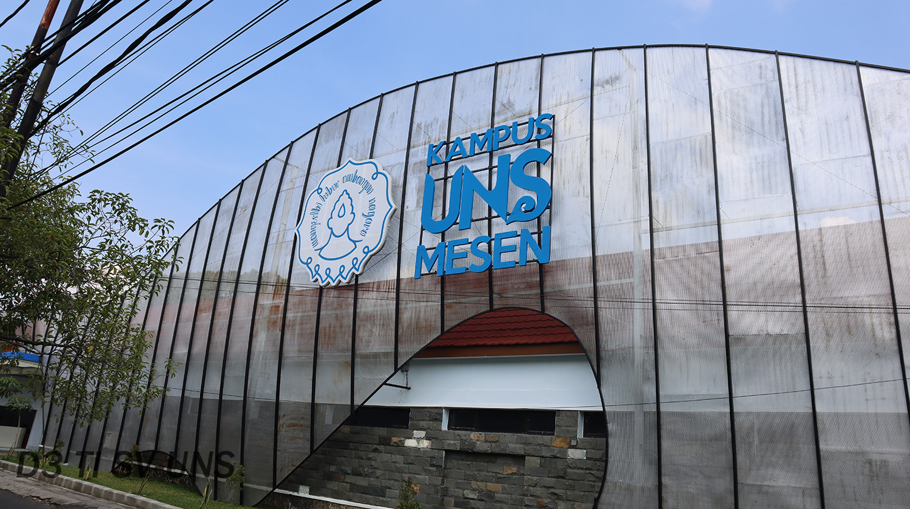
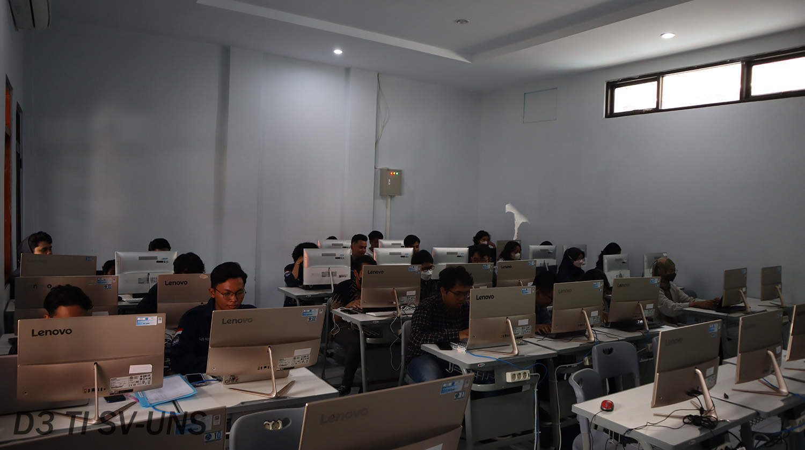
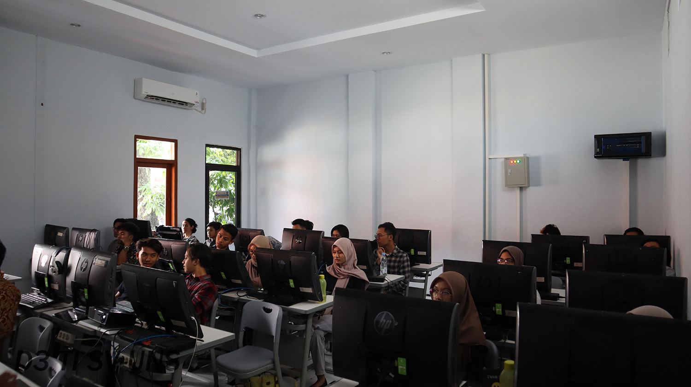

|
   |
Prodi D3 Teknik Informatika (D3TI) merupakan program studi di bawah fakultas Sekolah Vokasi UNS yang menyelenggarakan pendidikan ahli madya dalam bidang rekayasa informatika. Prodi ini berfokus menghasilkan lulusan yang kompeten dan siap bersaing di kancah nasional dan internasional. Berdiri pada 3 April 2002, prodi ini turut berperan aktif dalam menyelenggarakan pendidikan vokasional yang mengedepankan pengembangan sumber daya manusia yang siap kerja di dunia industri nasional maupun internasional. Untuk menunjang pembelajaran, prodi ini memiliki fasilitas laboratorium yang lengkap serta memadai, seperti Laboratorium Pemrograman Dasar, Laboratorium RPL, Laboratorium Jaringan Komputer, dan Laboratorium Mixed Reality, Laboratorium Pemrograman Lanjut, serta ruang kelas yang kondusif dan nyaman. Untuk mendukung peningkatan kualitas relevansi dalam pengajaran, penelitian, dan pengabdian masyarakat, Prodi D3TI Sekolah Vokasi UNS juga menjalin kerjasama dengan berbagai lembaga pemerintah, dunia usaha, dan dunia industri. Kelebihan Prodi1. Kurikulum Berbasis Kebutuhan IndustriProgram D3 Teknik Informatika Sekolah Vokasi UNS selalu mengikuti perkembangan terbaru di dunia industri teknologi. Kurikulum disusun dengan masukan langsung dari pelaku industri, memastikan bahwa mahasiswa mempelajari keterampilan yang dibutuhkan oleh pasar kerja. 2. Project-Based LearningMetode project-based learning ini memastikan bahwa mahasiswa dapat mengaplikasikan pengetahuan mereka dalam situasi dunia nyata. Dengan menyelesaikan berbagai proyek praktis, lulusan akan memiliki portofolio yang kuat dan siap bersaing di pasar kerja. 3. Laboratorium dan Fasilitas Teknologi CanggihProgram D3 Teknik Informatika UNS dilengkapi dengan laboratorium komputer yang modern dan berteknologi tinggi. Fasilitas yang lengkap ini membantu mahasiswa untuk mengembangkan keterampilan teknis mereka secara optimal. Untuk lebih lengkapnya, bisa mengunjungi website resmi D3 Teknik Informatika UNS di https://d3ti.vokasi.uns.ac.id/. |